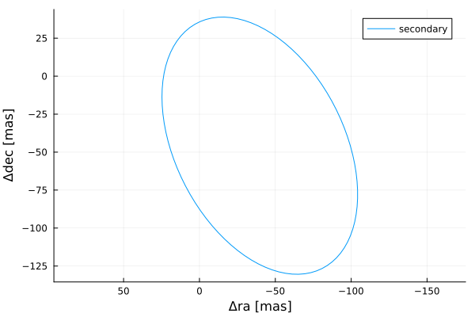
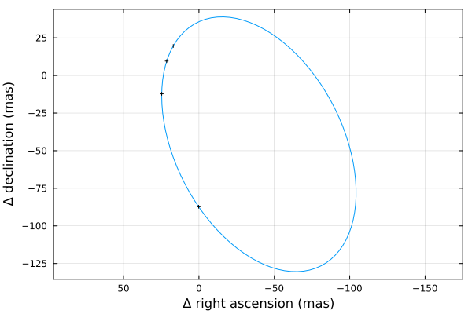
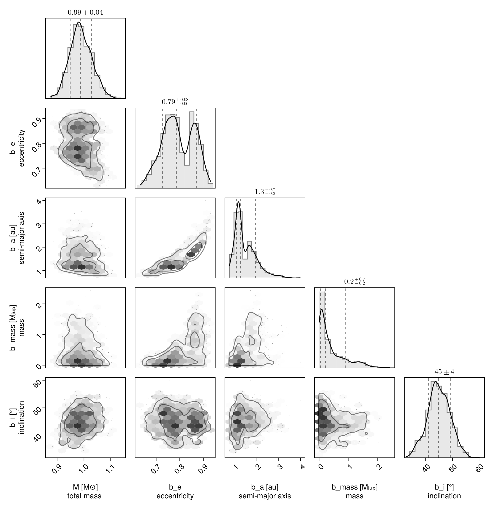
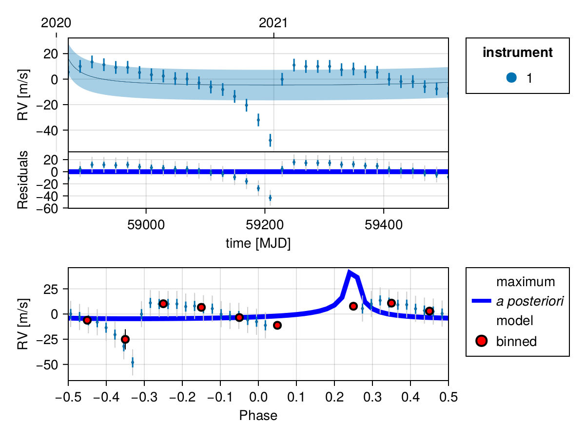

Fit Radial Velocity and Astrometry
You can use Octofitter to jointly fit relative astrometry data and radial velocity data. Below is an example. For more information on these functions, see previous guides.
Import required packages
using Octofitter
using OctofitterRadialVelocity
using CairoMakie
using PairPlots
using Distributions
using Plots:Plots
using PlanetOrbitsWe now use PlanetOrbits.jl to create sample data. We start with a template orbit and record it's positon and velocity at a few epochs.
orb_template = orbit(
a = 1.0,
e = 0.7,
i= pi/4,
Ω = 0.1,
ω = 1π/4,
M = 1.0,
plx=100.0,
m =0,
tp =58849
)
Plots.plot(orb_template)
Sample position and store as relative astrometry measurements:
epochs = [58849,58852,58858,58890]
astrom = PlanetRelAstromLikelihood(Table(
epoch=epochs,
ra=raoff.(orb_template, epochs),
dec=decoff.(orb_template, epochs),
σ_ra=fill(1.0, size(epochs)),
σ_dec=fill(1.0, size(epochs)),
))PlanetRelAstromLikelihood Table with 5 columns and 4 rows:
epoch ra dec σ_ra σ_dec
┌───────────────────────────────────────
1 │ 58849 17.0428 19.6097 1.0 1.0
2 │ 58852 21.3842 9.55631 1.0 1.0
3 │ 58858 24.6966 -12.2283 1.0 1.0
4 │ 58890 0.213769 -87.2649 1.0 1.0And plot our simulated astrometry measurments:
Plots.plot(orb_template, aspectratio=1, lw=1, label="")
Plots.plot!(astrom, aspectratio=1, framestyle=:box)
Generate a simulated RV curve from the same orbit:
using Random
Random.seed!(1)
epochs = 58849 .+ (20:20:660)
planet_sim_mass = 0.001 # solar masses here
rvlike = StarAbsoluteRVLikelihood(Table(
epoch=epochs,
rv=radvel.(orb_template, epochs, planet_sim_mass) .+ randn.() .+ 100randn(),
σ_rv=fill(5.0, size(epochs)),
inst_idx=ones(Int64, size(epochs)),
))
Plots.plot(rvlike, framestyle=:box)Now specify model and fit it:
@planet b Visual{KepOrbit} begin
e ~ Uniform(0,0.999999)
a ~ truncated(Normal(1, 1),lower=0)
mass ~ truncated(Normal(1, 1), lower=0)
i ~ Sine()
Ω ~ UniformCircular()
ω ~ UniformCircular()
θ ~ UniformCircular()
tp = θ_at_epoch_to_tperi(system,b,58849.0) # reference epoch for θ. Choose an MJD date near your data.
end astrom
@system test begin
M ~ truncated(Normal(1, 0.04),lower=0) # (Baines & Armstrong 2011).
plx = 100.0
jitter_1 ~ truncated(Normal(0,10),lower=0)
rv0_1 ~ Normal(0,10)
end rvlike b
model = Octofitter.LogDensityModel(test; autodiff=:ForwardDiff,verbosity=4)
using Random
rng = Xoshiro(0) # seed the random number generator for reproducible results
results = octofit(rng, model)Chains MCMC chain (1000×31×1 Array{Float64, 3}):
Iterations = 1:1:1000
Number of chains = 1
Samples per chain = 1000
Wall duration = 13.99 seconds
Compute duration = 13.99 seconds
parameters = M, jitter_1, rv0_1, plx, b_e, b_a, b_mass, b_i, b_Ωy, b_Ωx, b_ωy, b_ωx, b_θy, b_θx, b_Ω, b_ω, b_θ, b_tp
internals = n_steps, is_accept, acceptance_rate, hamiltonian_energy, hamiltonian_energy_error, max_hamiltonian_energy_error, tree_depth, numerical_error, step_size, nom_step_size, is_adapt, loglike, logpost, tree_depth, numerical_error
Summary Statistics
parameters mean std mcse ess_bulk ess_tail rhat ⋯
Symbol Float64 Float64 Float64 Float64 Float64 Float64 ⋯
M 0.9885 0.0406 0.0017 570.7669 670.7643 1.0002 ⋯
jitter_1 12.2719 1.8199 0.0622 920.1201 701.5243 1.0010 ⋯
rv0_1 2.9151 2.5755 0.1645 245.3235 481.0006 1.0034 ⋯
plx 100.0000 0.0000 NaN NaN NaN NaN ⋯
b_e 0.7940 0.0665 0.0134 28.0118 299.0886 1.0275 ⋯
b_a 1.5065 0.4911 0.0837 33.2484 258.3085 1.0387 ⋯
b_mass 0.4191 0.4738 0.0836 38.5190 239.7842 1.0303 ⋯
b_i 0.7839 0.0733 0.0052 197.5733 303.4157 1.0040 ⋯
b_Ωy -0.9116 0.0836 0.0161 32.0922 323.5028 1.0163 ⋯
b_Ωx -0.2912 0.2808 0.0510 28.1587 160.6739 1.0104 ⋯
b_ωy -0.7622 0.3075 0.0400 34.6991 152.8603 1.0022 ⋯
b_ωx -0.4609 0.3386 0.0600 30.7210 228.7381 1.0088 ⋯
b_θy 0.7478 0.0255 0.0012 454.6749 678.8735 0.9994 ⋯
b_θx 0.6648 0.0297 0.0016 339.9118 539.6143 0.9996 ⋯
b_Ω -1.4518 2.3812 0.2446 164.1198 427.8187 1.0128 ⋯
b_ω -2.4385 0.9725 0.0507 44.9204 202.9663 1.0101 ⋯
b_θ 0.7267 0.0344 0.0020 310.2786 660.1217 0.9996 ⋯
b_tp 58525.4155 450.3579 35.9560 178.9019 269.5016 1.0091 ⋯
1 column omitted
Quantiles
parameters 2.5% 25.0% 50.0% 75.0% 97.5%
Symbol Float64 Float64 Float64 Float64 Float64
M 0.9147 0.9609 0.9866 1.0164 1.0691
jitter_1 9.2530 10.9969 12.0879 13.3420 16.3754
rv0_1 -2.5691 1.3354 3.0080 4.6517 7.8077
plx 100.0000 100.0000 100.0000 100.0000 100.0000
b_e 0.6685 0.7444 0.7855 0.8544 0.9075
b_a 0.8742 1.1657 1.3049 1.7855 2.7377
b_mass 0.0047 0.0758 0.2232 0.6238 1.6235
b_i 0.6372 0.7365 0.7824 0.8342 0.9274
b_Ωy -1.0211 -0.9836 -0.9257 -0.8469 -0.7400
b_Ωx -0.6683 -0.5340 -0.3743 -0.0380 0.2196
b_ωy -1.0218 -0.9854 -0.9291 -0.5862 -0.0058
b_ωx -1.0051 -0.8207 -0.3536 -0.1592 -0.0052
b_θy 0.6967 0.7308 0.7472 0.7654 0.7990
b_θx 0.6053 0.6443 0.6656 0.6847 0.7235
b_Ω -3.1092 -2.7940 -2.5939 -2.4204 3.1158
b_ω -3.1034 -2.9664 -2.7271 -2.1359 -1.4662
b_θ 0.6596 0.7030 0.7271 0.7508 0.7917
b_tp 57221.8135 58310.0013 58847.8852 58848.5302 58848.9420
Display results as a corner plot:
octocorner(model, results, small=true)
Plot RV curve, phase folded curve, and binned residuals:
OctofitterRadialVelocity.rvpostplot(model, results,)
Display RV, PMA, astrometry, relative separation, position angle, and 3D projected views:
octoplot(model, results)